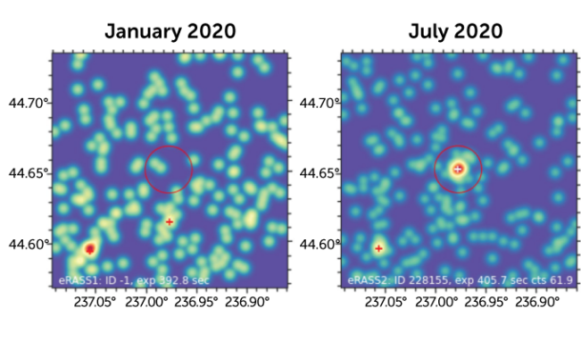

By Liz Kruesi
January 21, 2022 at 9:00 am
A brilliant blast from a galaxy 2 billion light-years away is the brightest cosmic “Cow” found yet. It's the fifth known object in this new class of exploding stars and their long-glowing remnants, and it's giving astronomers even more hints of what powers these mysterious blasts.
These Cow-like events, named for the first such object discovered in 2018 — which had the unique identifier name of AT2018cow — are a subclass of supernova explosions, making up only 0.1 percent of such cosmic blasts (SN: 6/21/19). They brighten quickly, glow brilliantly in ultraviolet and blue light and continue to show up for months in higher-energy X-rays and lower-energy radio waves.
Unraveling all that took a bit of time. The Zwicky Transient Facility at Caltech's Palomar Observatory near San Diego, Calif., initially noted a bright new burst of light June 12, 2020, but astronomers didn't realize what it was at the time.
Then in April 2021, researchers with the Spektrum-Roentgen-Gamma (SRG) space telescope, which studies X-ray light, alerted Yao and her colleagues to an interesting signal in SRG data from July 21–24, 2020, at the same spot in the sky. “I almost immediately realized that this might be another Cow-like event,” says Yao. The astronomers sprang to action and looked at that location with multiple other observatories in different kinds of light.
